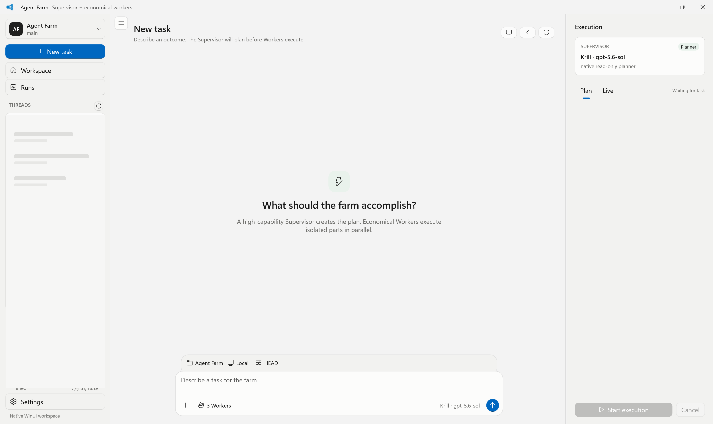

THE TOKEN COST PROBLEM
Stop burning
premium tokens
on routine work.
Keep your strongest model for planning and review. Route bounded execution to economical Workers.
LOCAL-FIRST
MULTI-PROVIDER
REVIEWABLE
MODEL ROUTING / CONCEPT
NO SAVINGS ESTIMATE
WITHOUT ROUTING
Premium model does everything
PREMIUM TOKENS CROSS THE FULL PIPELINE
AGENT FARM SPLITS JUDGMENT FROM EXECUTION
WITH AGENT FARM
Capability goes where it matters
PREMIUM CAPABILITY STAYS AT THE DECISION LAYER
01Plan with the best
02Execute economically
03Accept only evidence
INTERACTIVE LOCAL DEMO
Watch one request become
a controlled farm run.
Simulated in your browser. No backend call and no usage claim.
READY
PHASE 01 / 05
Request ready
S
SUPERVISORPLAN + REVIEW
W1MAP
W2BUILD
W3TEST
EVIDENCE GATE
PATCH / TESTS / SCOPE
ACTIVITY
SIMULATED
- 00
Request is ready for planning.
- 01
Supervisor defines roles and boundaries.
- 02
Workers execute in isolated worktrees.
- 03
Patch, tests, and scope evidence collected.
- 04
Review package is ready for judgment.
00:00 / 00:08
REAL LOCAL PRODUCT CAPTURE
A native command center.
Not another browser tab.
WinUI workspace. Local daemon. Task history redacted in this capture.


AGENT FARM / WINDOWS PREVIEW